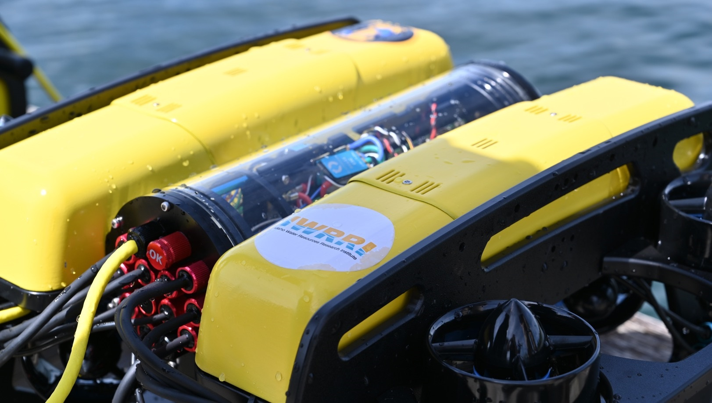

Gallery



The Sunfish is the latest drone purchased by the University of Idaho’s Coeur d’Alene Computer Science Department. Its primary feature is a PixHawk drone controller paired with Mavlink,a popular software for aerial drones. This performs all the thruster management and stabilization. It also enables control through a ground control station, either manually via an Xbox controller or with ArduPilot Mission Planner,a specialized waypoint-based navigation system designed for aerial drones.
This software is designed to bridge the gap between the Mavlink software and a Python program,bypassing the ground control station and creating a link directly between a Python script and the Mavlink software. This allows for simple, direct control of the drone, a uniform way to retrieve navigational and sensor data, as well as control of the waypoint-based navigation system used in the ground control software with a valid location system. It is also designed to be easily expanded, so new features can easily be added and used.
This enables development of software to make the Sunfish and other drones with a similar architecture able to autonomously collect water data, including places previously unsafe or difficult to access. It also allows the drone to be run without a tether, preventing issues caused by the tether getting tangled, and allowing a greater free range of motion.
Team Member/Leader
Amanda was in charge underwater data collection using the drone, and is the preson who uses the interface the most.
Mentor
Prof. Shovic was the primary Staff member in charge of the over-arching drone project. He was in charge of the oversight of the project.